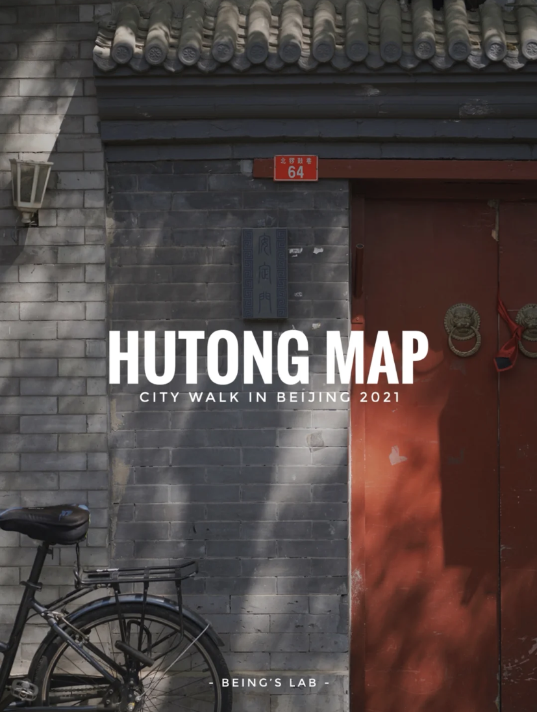
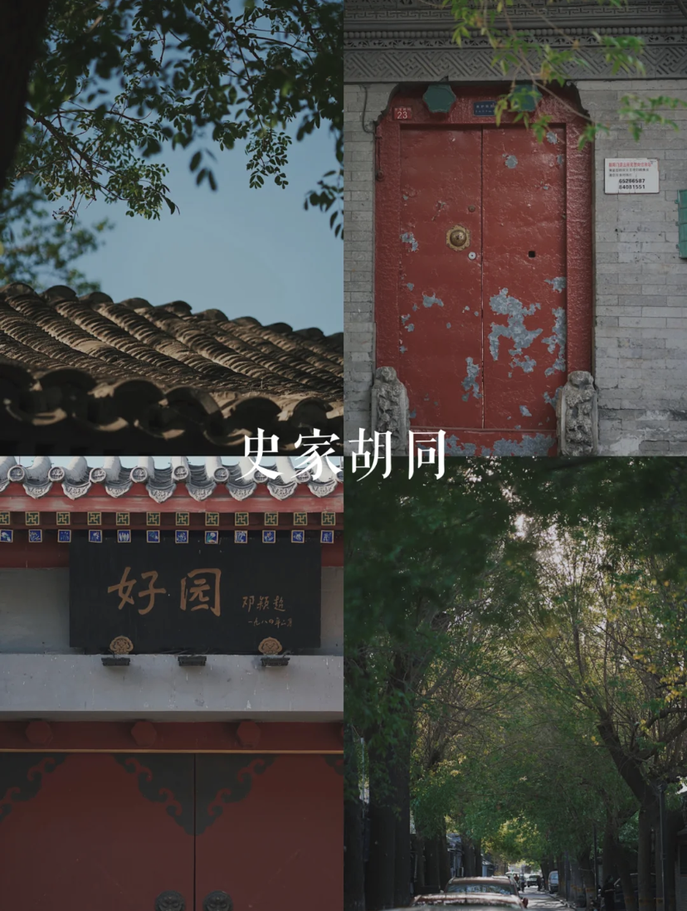
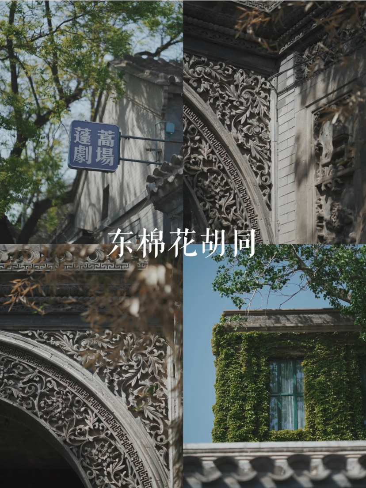
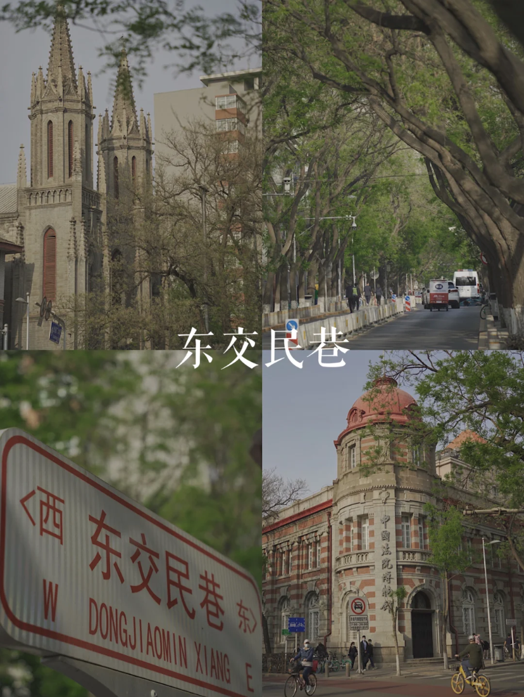
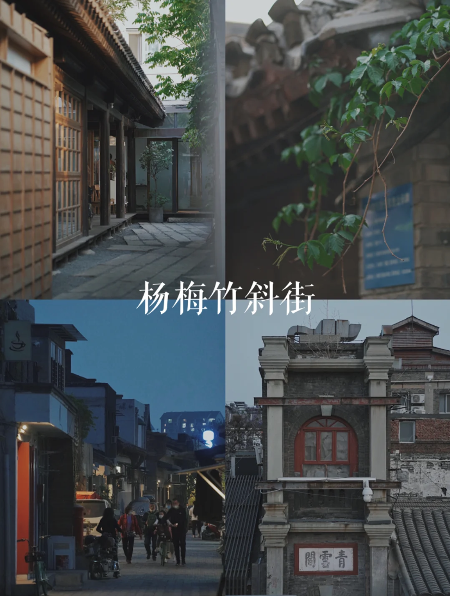
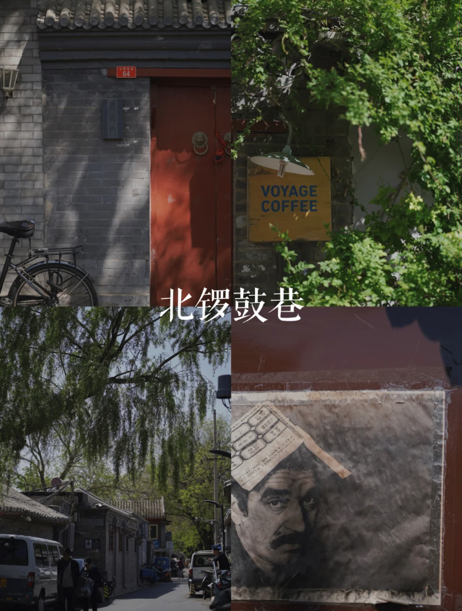
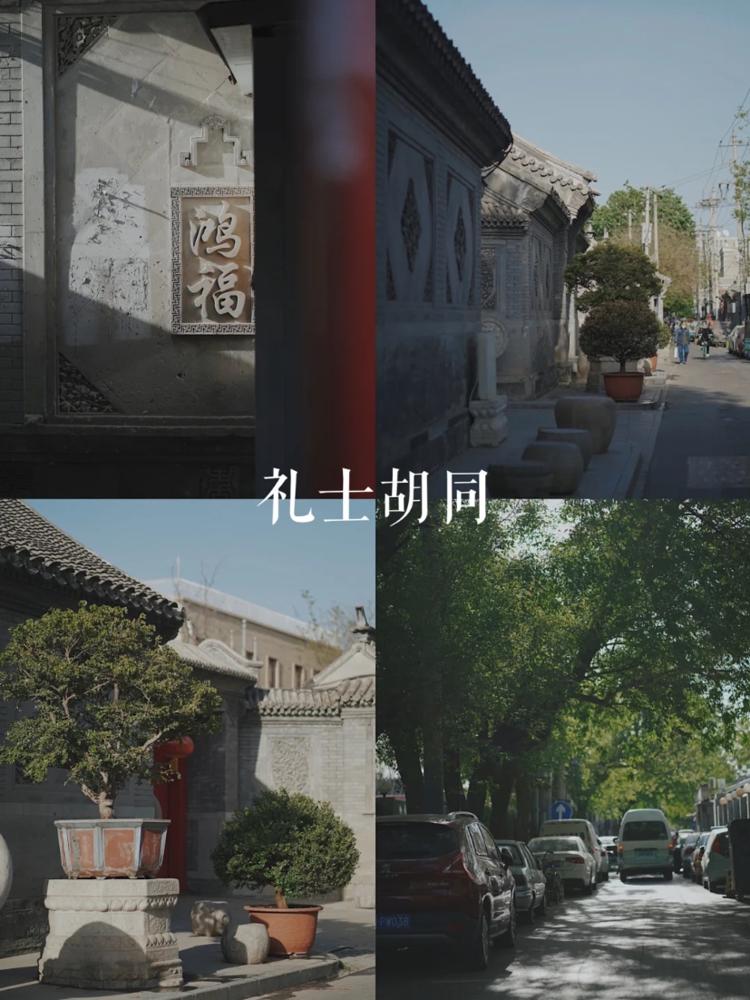
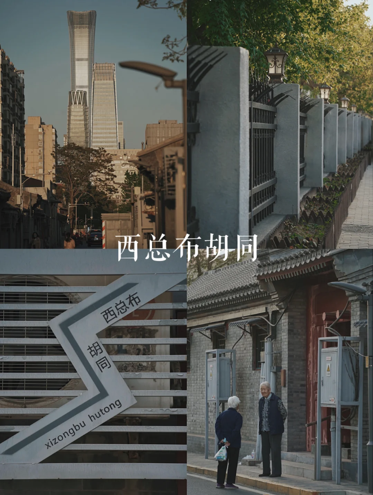
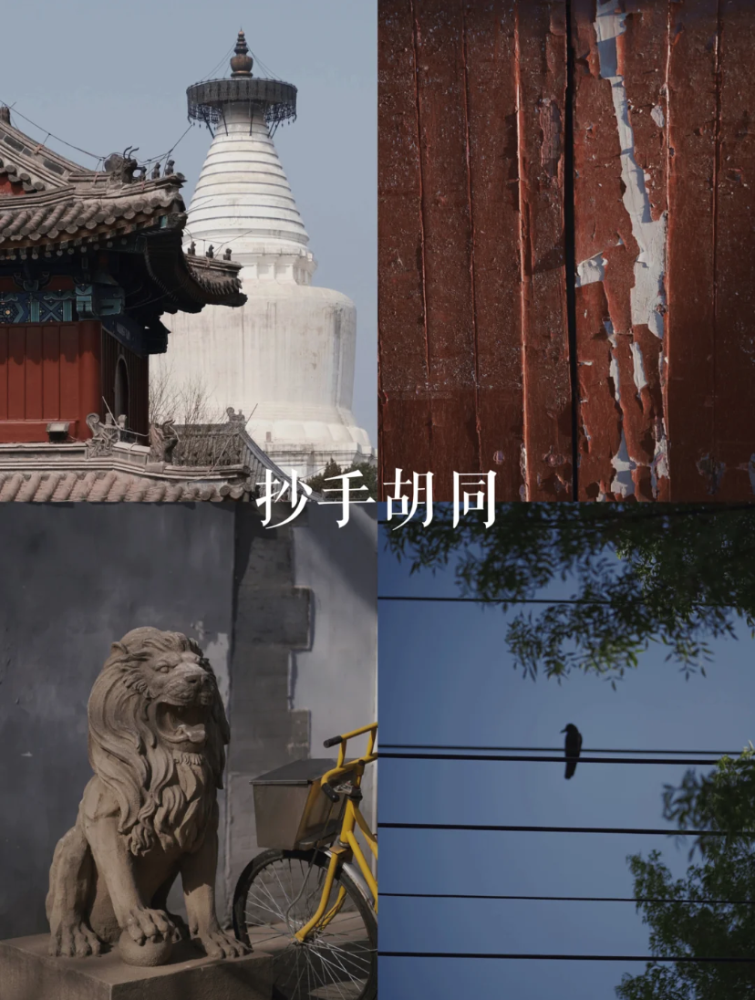

「旅」北京十大胡同漫步地图｜京城的人间烟火

● 北京胡同漫步地图 ●
在北京生活的这十来年间，
每当需要独处或自愈，我都会选择两处去漫步，
一是最爱的故宫，另外就是藏在四九城内的各条胡同.
.
以下是我在北京最爱漫步的十条胡同，
五一晴好暖意浓，不如去胡同溜达.
希望你无论是生活在此还是旅行一瞥，
都能见到北京城最动人最温暖的一面.
若你有更美好的路线，欢迎在评论里补充.
.
▪️ #史家胡同
“一条胡同，半个中国”，北京最传奇的胡同，从清起就住过无数传奇人物、忠臣良将、民族英雄、才子佳人. 所有建筑都保护得很好，胡同博物馆也位于此，静谧清净，树荫成盖，每一步都漫步在历史上.
.
▪️ #东棉花胡同
因为有着文青白月光独立剧场——蓬蒿剧场，这是我最常去的胡同，历史文化气息浓郁，中戏也坐落在此，有一处隐秘拱门砖雕非常惊艳，步行尽头可至玉河.
.
▪️ #东交民巷
大名鼎鼎，民国时期各使馆和教堂所在地，也是被提及最多“最美胡同”的所在，幽静街道旁林立许多洋楼与旧建筑，上海的风情和北平的风骨并存.
.
▪️ #杨梅竹斜街
前门旁的宝藏胡同，藏近百家文艺小店，没那么商业化，住过很多历史名人，是正阳门下的时光留下的人间诗篇.
.
▪️ #北锣鼓巷
南锣鼓巷对面却惬意悠闲很多，没有满街塑料感的商业店，喝咖啡买文艺小物看鼓楼不妨就来这里.
.
▪️ #礼士胡同
有着最气派非凡大院儿的礼士胡同，极爱看这129号院外的砖雕，有着北京其他胡同不同的气质，住过不少礼贤下士。人少安静.
.
▪️ #三里河公园 /群智胡同
前门附近不太出名的胡同，但走到尽头是京城秘境小江南，春风习习桃华满目，风依柳青岸上住那种惬意，非常适合散步.
.
▪️ #西总布胡同
最结合古老与现代的胡同，直面CBD，从古老的街道望向今日繁华的北京，是摄影师最爱的机位打卡处.
.
▪️ #白塔寺前抄手胡同
白塔寺旁，有很多独立cafe，随便进一家都值得呆上一下午，绕走白塔寺更有京城独一份的情怀和浪漫.
.
▪️ #五道营胡同
很好地平衡商业和历史，众多特色美食和酒吧，一街之隔有孔庙和国子监，是与朋友相聚最多次的胡同.
.
.
每次走在这座古老城市最有烟火味儿的窄街小道，
看到围坐下象棋的大爷们、门口扇扇子纳凉的奶奶、
听着不知道谁家窗口传出的单田芳
和叮铃铃掠过身边的二八大杠…
就觉得自己坐困愁城里的一地琐碎都轻了，
人间悲喜冷暖有时，历史去了几百年，
什么都比不上认真生活在当下给人的安全和温暖.
.
胡同不便停车，建议地铁/单车出行.
.
❞在京愉快.
发布于 2021-04-25 08:02
评论
Being的生活实验室
行走40余国的大龄文青 ▫️ 留日硕士 东京狂热爱好者 ▫️ 𝐂𝐈𝐓𝐘 𝐖𝐀𝐋𝐊 | 𝐋𝐈𝐅𝐄 𝐒𝐓𝐘𝐋𝐄 | 𝐀𝐑𝐓